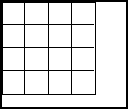
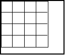

| HOME >> Tutorials >> Tutorial 28: Matrices |
Introduction:
We are going to continue with the trend of learning new things that will help us in making good games. Have you ever wanted to make a game where the character moves around in a level? Well, after finishing this tutorial, you will be able to and realize that matrices are not just used for math. First, before we get into any code, we have to set one thing straight: it is one matrix, and two matrices. There are no such things as matrixes. I just thought that I should clear that up, because many people seem to make that mistake. So, now that we have gotten the grammar lesson out of the way, let's start programming.
Commands To Remember:
| augment( | Returns a matrix, which is the second matrix added to the end of the first matrix as new columns |
| dim( | Returns the dimension of a matrix in the form of a list |
| Fill( | Stores a value into each element of a matrix |
| augment(matrixA,matrixB) | dim(matrix) | Fill(value,matrixname) |
| {rows,columns} |
The Codes:
There will be four codes in this tutorial, with the first just showing the mathematical aspects of matrices. The second code shows how to transpose a matrix on the home screen, and the third shows how to display random text on a 4x4 grid, something you might use if you were making a memory game. The final code is the big one, which shows how to make a level on the home screen. One more thing before we get started. If you wanted to use matrix [A], you cannot get it by pressing "[," "A," and "]." To get matrix [A], you have to press the button and then choose from matrix [A] to [J]. This is important because you will get an ERR:SYNTAX message, if you do it the wrong way.
| : | For AShell, SOS, and TI-Explorer |
| ClrHome | Clears the home screen |
| {3,3} |
Both [A] and [B] are 3x3 matrices |
| {3,2} |
[C] is a 3x4 matrix and [D] is a 4x3 matrix |
| Fill(3,[A]) | Fills every element of [A] with 3s |
| [[1,2,3][4,5,6][7,8,9]] |
Sets the values of [B] row by row |
| Disp [A],[B] | Displays [A] and [B] |
| Pause | Suspends program and waits for use to press |
| ClrHome | Clears the home screen |
| 3[A] |
Multiplies the value of every element in [A] by 3 |
| -[B] |
Negates the value of every element in [B] |
| Disp [A],[B] | Displays [A] and [B] |
| Pause | Suspends program and waits for use to press |
| ClrHome | Clears the home screen |
| [[7,3][2,5][4,1]] |
Sets the values of [C] row by row |
| [[1,2,3][4,5,6]] |
Sets the values of [D] row by row |
| Disp [C][D] | Displays [C] multiplied by [D] |
| Pause | Suspends program and waits for use to press |
| ClrHome | Clears the home screen |
| -[B] |
Negates the value of every element in [B] |
| Disp augment([A],[B] | Displays [B] added on to the end of [A] |
| Disp [B](3,2) | Displays value of element at row 3 and column 2 |
press  press
press  press
press 
Let me start off explaining a couple of things. To add or subtract matrices, the dimensions of the matrices must be the same. To multiply two matrices together, the column dimension of the first matrix must match the row dimension of the second matrix. In other words, if the first matrix has 4 columns (for instance a 5x4), then the second matrix must have 4 rows (for instance a 4x2) in order for multiplication to happen. If those two are not the same, you will get an "ERR:DIM MISMATCH" message. When you are setting the values of each element in a matrix, the values you enter go row by row. So, if you have a 4x2 matrix, you'd first put the opening bracket "[," which indicates the beginning of the matrix. Next, you'd put another opening bracket, which indicated the beginning of the first row of the matrix, which will have 2 elements on it. Then after putting the closing bracket "]," which indicates the closing of the first row, you'd but another opening bracket to indicate the beginning of the second row. You would continue this pattern until you've put the closing bracket, which closes the fourth row. Then, finally, you would put another closing bracket to indicate the closing of the entire matrix. The only other aspect of this code that I will explain is accessing an individual element in a matrix. If you wanted to access an element that is in row 3 and column 5 of [G], then you would put "[G](3,5)." This is very similar to how you accessed an element in a list when doing "L1(2)." This will be very helpful you want to display or compare a specific element in a matrix. Next up is transposing a matrix onto the graph screen.
| : | For AShell, SOS, and TI-Explorer |
| ClrHome | Clears the home screen |
| {8,16} |
[A] is a 8x16 matrix |
| For(B,1,8 | |
| For(A,1,16 | A random integer from 0 to 9 will |
| randInt(0,9) |
be stored into each element of [A] |
| End | End of inner For loop |
| End | End of outer For loop |
| Output(1,1,"[A](1,5)= | Displays "[A](1,5)=" on the top line |
| Output(1,12,[A](1,5) | Displays the value of the element at row 1 and column 5 |
| Output(3,1,"[A](7,13)= | Displays "[A](7,13)=" on the third line |
| Output(3,12,[A](7,13) | Displays the value of the element at row 7 and column 13 |
| Output(5,1,"[A](4,8)= | Displays "[A](4,8)=" on the fifth line |
| Output(5,12,[A](4,8) | Displays the value of the element at row 4 and column 8 |
| Output(7,1,"[A](5,1)= | Displays "[A](5,1)=" on the seventh line |
| Output(7,12,[A](5,1) | Displays the value of the element at row 5 and column 1 |
| Pause | Suspends program and waits for use to press |
| ClrHome | Clears the home screen |
| For(B,1,8 | |
| For(A,1,16 | Displays every element of [A] in its |
| Output(B,A,[A](B,A | corresponding spot on the home screen |
| For(X,1,50 | Used to have a short period of time |
| End | after each matrix element is displayed |
| End | End of inner For loop |
| End | End of outer For loop |
| Pause | Suspends program and waits for use to press |
Possible Output:
press 
The whole purpose of this code was to show you that you could display what you have in a matrix on to the screen. The reason that I have that first screen that just displays four values is so that you can see that the values match up. As you can see in the screen shots, they do match. You may be thinking that this does not have many practical uses. You could also be asking how this would be done on the graph screen. Well, you are right, but what you will learn in the next code will be another stepping stone in fully understanding how to use matrices. Oh, and by the way, it will be on the graph screen.
| : | For AShell, SOS, and TI-Explorer |
| ClrHome | Clears the home screen |
| ClrDraw | Clears the graph screen |
| AxesOff | Turns the graph axes off |
| FnOff | Deselects all the Y= functions |
| 0 |
Stores Xmin as 0 |
| 94 |
Stores Xmax as 94 |
| 0 |
Stores Ymax as 0 |
| -62 |
Stores Ymin as -62 |
| {4,4} |
[A] is a 4x4 matrix |
| For(B,1,4 | |
| For(A,1,4 | A random integer from 1 to 3 will be |
| randInt(1,3) |
stored into each element of [A] |
| End | End of inner For loop |
| End | End of outer For loop |
| Disp [A] | Displays [A] |
| Pause | Suspends program and waits for use to press |
| ClrHome | Clears the home screen |
| For(X,0,4 | |
| Line(15X,0,15X,-60 | Creates a 4x4 grid on the graph screen |
| Line(0,-15X,60,-15X | |
| End | End of For loop |
| Pause | Suspends program and waits for use to press |
| For(B,1,4 | |
| For(A,1,4 | |
| [A](B,A) |
Stores the value of the matrix element into E |
| If E=1:"HI |
If value of the matrix element is 1, store "HI" into Str0 |
| If E=2:"BYE |
If value of the matrix element is 2, store "BYE" into Str0 |
| If E=3:"HEY |
If value of the matrix element is 3, store "HEY" into Str0 |
| Text(15(B-1)+4,15(A-1)+2,Str0 | Displays text in Str0 in the matrix element's |
| End | place in the 4x4 grid on the graph screen |
| End | End of outer For loop |
Possible Output:
press   press
 press 
Okay...now for the explanation. You should understand completely up until the 4x4 grid is drawn. Technically, you should be able to figure out how the grid is drawn, but since I have never done anything like it before, I'll give you an explanation. The For loop counts from 0 to 4, which is actually 5 times that it is being repeated. If you look at the grid from left to right, you will see that there are 5 vertical lines. If you look from top to bottom, you will see that there are 5 horizontal lines. So, instead of using 10 Line( commands, we can do everything in 4 lines using the For loop. When X starts off, it is 0, so a vertical line is drawn from (0,0) to (0-60). Still with X being 0, a horizontal line is drawn from (0,0) to (60,0). Next, when X is 1, a vertical line is drawn from (15,0) to (15,-60). Notice how in both vertical lines drawn so far, the Y values have remained constant. Since the Y values in the vertical lines won't change, we can just put the constants 0 and -60 in for the values. X is still 1, so for the next horizontal line is drawn at (0,-15) to (60,-15). In the case for the horizontal lines, the X values never change, so we use the constants 0 and 60 for it's values. The next vertical line is drawn from (30,0) to (30,-60) because X is now 2 and 15 multiplied by 2 gives 30, which is the value for X. The same pattern occurs for the next horizontal line with X still being 2, and for both lines when X is 3 and 4. This is just basically a space saver. Why do in 10 lines, which can be done in 4? Okay, now on to the actual purpose of the code. After the 4x4 grid is drawn, we use nested For loops to check through every element in [A]. An element in [A] (which is stored into user variable E) can have a value of 1, 2, or 3 because of the randInt command we used earlier in the code. What happens next is the key to how you can have numerical values in a matrix come out to be text on the graph screen. Three If statements check to see what the value of the element in [A] (user variable E) is, and depending on it's value, text is stored into Str0. Str0 is then immediately displayed on the graph screen using a formula for row and column with the variables A and B. You see, in the previous code we just did "Output(B,A,[A](B,A" because each character is assigned a specific slot on the home screen. However, the graph screen is different. If we did something like "Text(B,A,Str0," all of the text would be jumbled in the top-left hand corner. You will just have to figure out for yourself the formula you need to use in order to get the text to display correctly. What I did to figure out the formula is see where I wanted the text in box at row 2 and column 3 and see what combination of addition, subtraction, and multiplication I need to get that value. I hope you were able to understand all of that. I would have to say that the hardest part of the whole code is just figuring out what formulas to use for row and column in the Text( command. Once again, I color coded some values and text to see the correlation between the actual values in the matrix and what was displayed on the graph screen. Next, we'll pool all the knowledge of this tutorial in order to make ourselves a simpe level in an RPG, where you have to collect treasures.
| : | For AShell, SOS, and TI-Explorer |
| ClrHome | Clears the home screen |
| {8,16 |
[A] is a 8x16 matrix |
| [[2,2,2,2,2,2,2,2,2,2,2,2,2,2,2,2][1,0,0,0,0,1,0,1,0,0,0,0,0,0,0,1][1,0,2,2,0,1,0,2,2,2,0,2,0,2,2,1][1,0,1,0,0,1,0,1,0,0,0,1,0,0,0,1][1,0,1,2,2,2,0,1,0,0,2,1,0,0,0,1][1,0,0,0,1,0,0,0,0,0,0,2,2,0,2,1][1,0,0,0,0,0,0,1,0,0,0,0,0,0,0,1][2,2,2,2,2,2,2,2,2,2,2,2,2,2,2,2 |
Sets the values of each element in [A] row by row (put all 8 lines on one line in your calculator) |
| Output(4,4,"LEVEL 1... | Displays "LEVEL 1..." on the fourth line |
| For(X,1,300 | |
| End | |
| ClrHome | Clears the home screen |
| For(B,1,8 | |
| For(A,1,16 | |
| [A](B,A |
Stores the value of the matrix element into E |
| If E=0:Output(B,A," " | If value of the element is 0, display " " |
| If E=1:Output(B,A,"! | If value of the element is 1, display "1" |
| If E=2:Then | If value of the matrix element is 2, then |
| Output(B,A,"- | Display "-" (minus sign) on the home screen |
| 1 |
Stores 1 as the value of the matrix element |
| End | Ends If-Then statement |
| End | End of inner For loop |
| End | End of outer For loop |
| 3 |
Stores 3 into [A] at row 7 and column 2 |
| 3 |
Stores 3 into [A] at row 7 and column 3 |
| 0 |
Sets user variable T to 0 |
| Repeat T=5 | Repeat until 5 treasures have been placed on the screen |
| randInt(1,16 |
Stores a random number between 1 and 16 into A |
| randInt(1,8 |
Stores a random number between 1 and 8 into B |
| If [A](B,A)=0:Then | If there is no barrier at the random position, then |
| 4 |
Store 4 into [A] at the random position |
| Output(B,A,"* | Display "*" at the random position on the screen |
| T+1 |
Increase T by 1 |
| End | Ends If-Then statement |
| End | Ends Repeat loop |
| 0 |
Stores 0 into [A] at row 7 and column 2 |
| 0 |
Stores 0 into [A] at row 7 and column 3 |
| 3 |
Sets the values of A & B (coordinates of the "character") |
| 2 |
Sets the values of C & D (coordinates of the blank space) |
| 0 |
Sets the value T (the amount of treasures collected) to 0 |
| While T<5 | Do everything while T is less than 5 |
| getKey |
Stores the key's key code into user variable K |
| A+(K=26)-(K=24) |
If |
| B+(K=34)-(K=25) |
If |
| If K=26 or K=24 or K=34 or K=25:Then | If |
| If [A](F,E)=1:Then | If the spot you're going to move to is a barrier, |
| E+(K=24)-(K=26) |
Undo the increment/decrement of user variable E |
| F+(K=25)-(K=34) |
Undo the increment/decrement of user variable F |
| C |
Stores the blank space's position into the character's |
| End | Ends "barrier-checking" If-Then statement |
| A |
Stores the character's position into the blank space's |
| E |
Makes the character's future position the present one |
| If [A](B,A)=4:Then | If there's a "*" in the character's new position, |
| T+1 |
Increase T (treasure count) by 1 |
| 0 |
Stores 0 in the matrix element where the treasure was |
| End | Ends "treasure-checking" If-Then statement |
| End | Ends "arrow key-checking" If-Then statement |
| Output(B,A,"c | Displays the "character" |
| Output(C,D," " | Displays the blank space |
| End | Ends While loop |
| ClrHome | Clears the home screen |
| Output(4,4,"LEVEL 2... | Displays "LEVEL 2..." on the fourth line |
| For(X,1,300 | |
| End |
Possible Output:
then then and then
Further Explanation:
Whew! That was a lot of code...but wait until you see this explanation. First of all, you must make sure that you input the numbers that go into [A] exactly how they appear in the code. Any mistake will make the level look bad and possibly screw everything up. If you hadn't already picked it up, in the matrix, a "0" stands for a blank space on the screen, a "1" represents an exclamation mark ("!"), and a "2" is a minus sign ("-"). After setting up the matrix, the program then goes through every element in [A] and displays it's corresponding character on the home screen. So if a certain element had the value of 2, it would display a minus sign on the home screen. You may have noticed that this time we did not store the characters into a string and then display the string after all the If or If-Then statements like we did in the previous code. Instead, at each If statement we displayed the character without having to store it into a string. I decided to do it this way because storing and then recalling values from a string slow down the loading process. If we did it the other way, the level would take twice as long to fully load. Speed is the key to a good game! You may be wondering why, if that matrix element is 2, is it then changed to a 1. The reason is that later on the program we will only want one number to stand for a boundary, not two. This will become more apparent later on in the code. After successfully setting up the level, next the program will randomly place 5 stars (treasures) on the screen for you to collect during game play. In the Repeat loop, it gives random values for A and B (the position where the "treasure" will be placed) and checks to see if that spot on the home screen is blank by comparing the value of the corresponding element in [A]. The reason we have to do this is so that the star won't get placed on top of a barrier. If that spot is blank, the value of the element becomes 4 and a "*" is displayed on the screen. However, if the place where the "*" is going to place is not blank (the value of the matrix element is not 0), then the program skips that entire If-Then statement, loops back to the beginning, and gives new random values for A and B. I purposely skipped over the part where [A](7,2) and [A](7,3) were given the values of 3 and the later stored as 0, but now I will explain it. The reason those two elements were stored as 3 was so that when the 5 treasures were being randomly placed on the screen, they would not be placed where your "character" is going to start out at. After all of the treasures have been placed, those two elements are then returned to their original value of 0 so that they will appear again to be just empty space. You see we could have just designated 5 slots in [A] before when we were initializing [A], but I think it's better for the placement of the treasures to be random. It's just more fun that way!
Okay, moving on to the most difficult part of the code; the part that makes everything work. In the While loop, user variables A and B will contain the coordinates of where your "character" will be placed on the screen. User variables C and D will contain the coordinates of the "blank space." The "blank space" is always going to be the previous position of the "character." You see, once the character moves to a new location, the previous location needs to be deleted. That "blank space" achieves that task. User variable T will count the number treasures that you have collected. The first three lines inside the While loop should look familiar to you. However, if you notice the increment/decrement of A is actually stored into E, and the increment/decrement of B is stored into F. User variables E and F contain the future position of your character designated by which arrow key you pressed. The next line is very important. It says that if a directional key was pressed then do everything between it and its corresponding End. The reason why this is so important is that if a key was not pressed, we don't want anything to happen; we want everything to stay the same. If you look at the code, only two lines are outside of that If-Then statement: the lines that display the character and the blank space. So, if no key is pressed, the character and blank space are just displayed over each other until a key is pressed.
Next, let's examine that big If-Then statement, which, by the way, should be all on one line. The next line following that big If-Then statement is another If-Then statement, but this one checks to see if the future position of the character happens to be a barrier. Do you remember back in the code when we were displaying the level and all values of 2 in the matrix were changed to 1? Well, here is why we did that. If we had two values for barriers, "1" for vertical ones and "2" for horizontal ones, we'd have to change that If-Then statement to read "If [A](F,E)=1 or [A](F,E)=2:Then" instead. To avoid having to use the "or," we just made "1" stand for a barrier so that we could just have "If [A](F,E)=1:Then." Okay, the next two lines may be a little confusing at first, but once I explain it, I'm sure you'll get it. So, if the future position is a barrier, we have to undo the changes to user variables E and F. Let's say that both A and B were 6 (the character's current position). If the right arrow key was pressed, that would give E the value of 7 and F would remain at 6. However, if pressing the right button meant that we would run into a barrier, then we would have to undo that change to E. So to do that, we have reversed that getKey formula so that if the right button was pressed, it would decrement the value of E. If you look closely, the getKey code numbers are switched in both formulas. In the first one it was "A+(K=26)-(K=24) E," but in the second one it's "E+(K=24)-(K=26)
E," but in the second one it's "E+(K=24)-(K=26) E." I will explain the last line in the "barrier-checking" If-Then statement after explaining some other stuff first. Okay, let's again say that both A and B have the value of 6. C also is 6, and D is 7 because the character was just moved up one and the blank space would be underneath the character. So, the row,column coordinates of the character is (6,6), and the blank space is (7,6). Now that we have all of that settled, let's move the character to the left, but this time there is no barrier in that spot. The program skips the whole "barrier-checking" If-Then statement and goes down to this line: A
E." I will explain the last line in the "barrier-checking" If-Then statement after explaining some other stuff first. Okay, let's again say that both A and B have the value of 6. C also is 6, and D is 7 because the character was just moved up one and the blank space would be underneath the character. So, the row,column coordinates of the character is (6,6), and the blank space is (7,6). Now that we have all of that settled, let's move the character to the left, but this time there is no barrier in that spot. The program skips the whole "barrier-checking" If-Then statement and goes down to this line: A C:B
C:B D. What this line does is put the current position of the character in to the variables that hold the position of the blank space. So now, both C and D are 6 because both A and B were both 6. The next line (E
D. What this line does is put the current position of the character in to the variables that hold the position of the blank space. So now, both C and D are 6 because both A and B were both 6. The next line (E A:F
A:F B) puts the future position of the character into the variables that hold its current position. Now, A is 5 and B is still 6. So before even displaying the character or the blank space, you can see that the character has moved to the left 1 space. Before A was 6 and now it is 5, with B staying at 6 the whole time. The blank space, which before was underneath the character, is now to the right of it because D is now 6. The row,column coordinates of the character is (6,5), and the blank space is (6,6). The next If-Then statement checks to see if the new position of the character (6,5) happens to be where a treasure is. If there is a "*" in that spot, T (the number of treasures collected) is incremented by 1 and the value of that matrix element becomes 0. We have to store that element as 0, so that if we happen to cross over that position later on, it will act as a blank space and not a spot where treasure is. Finally, at the end of the While loop, the character and blank space are displayed.
B) puts the future position of the character into the variables that hold its current position. Now, A is 5 and B is still 6. So before even displaying the character or the blank space, you can see that the character has moved to the left 1 space. Before A was 6 and now it is 5, with B staying at 6 the whole time. The blank space, which before was underneath the character, is now to the right of it because D is now 6. The row,column coordinates of the character is (6,5), and the blank space is (6,6). The next If-Then statement checks to see if the new position of the character (6,5) happens to be where a treasure is. If there is a "*" in that spot, T (the number of treasures collected) is incremented by 1 and the value of that matrix element becomes 0. We have to store that element as 0, so that if we happen to cross over that position later on, it will act as a blank space and not a spot where treasure is. Finally, at the end of the While loop, the character and blank space are displayed.
Okay, let me explain that last line in the "barrier-checking" If-Then statement. The reason we need this line is so that the blank space would not be displayed on top of the character. Let's once again say that A and B are both 6, but that last line is not in the code. C is 6 and D is 7. The up arrow is pressed (making E equal to 6, and giving F the value of 5), but there is a barrier above the character. After the first two lines in that If-Then statement, E stays the same and F equals 6. The line "C A:D
A:D B" is not there, so the If-Then statement is finished. After the next two lines, A and B would both be 6, which is what we want because those were the original coordinates of the character. However, after those two lines, C and D are also both 6. Try it and see. This causes a problem because the blank space would be displayed over the character. So, in order to prevent this from happening, we have that line "C
B" is not there, so the If-Then statement is finished. After the next two lines, A and B would both be 6, which is what we want because those were the original coordinates of the character. However, after those two lines, C and D are also both 6. Try it and see. This causes a problem because the blank space would be displayed over the character. So, in order to prevent this from happening, we have that line "C A:D
A:D B" inside the "barrier-checking" If-Then statement. What this does is give A and B (which will be stored into C and D after the If-Then statement is finished) the values of C and D. Okay, at the beginning of that line, A, B, C, E, and F are all 6, and D is 7. After that line, A is still 6, but B is now 7. Then when the calculator executes the line "A
B" inside the "barrier-checking" If-Then statement. What this does is give A and B (which will be stored into C and D after the If-Then statement is finished) the values of C and D. Okay, at the beginning of that line, A, B, C, E, and F are all 6, and D is 7. After that line, A is still 6, but B is now 7. Then when the calculator executes the line "A C:B
C:B D," C is 6 and D is 7, instead of them both being 6 if the line "C
D," C is 6 and D is 7, instead of them both being 6 if the line "C A:D
A:D B" (inside the "barrier-checking" If-Then statement) wasn't there. Finally, after executing the line "E
B" (inside the "barrier-checking" If-Then statement) wasn't there. Finally, after executing the line "E A:F
A:F B," A and B are both 6, which is what we want. The character is displayed at (6,6) and the blank space is displayed at (7,6), where they originally were in the first place. Well, I think I've explained the code to death, so let's move on to the conclusion.
B," A and B are both 6, which is what we want. The character is displayed at (6,6) and the blank space is displayed at (7,6), where they originally were in the first place. Well, I think I've explained the code to death, so let's move on to the conclusion.
Conclusion:
With what you've learned in this entire tutorial, you should be able to make many more types of games now. As shown in the tutorial, you should be able to make a level in an RPG, possibly a Tic-Tac-Toe game, and even a memory game where you have to match cards together. Matrices just makes doing some things very easy. You may want to take a break, but when you are finished, go on to the next tutorial that covers fractions and decimals.
If you do not understand a particular part in this lesson, have suggestions, or find any problems please contact me.
 |
 |
| Tutorial 27 | Tutorial 29 |